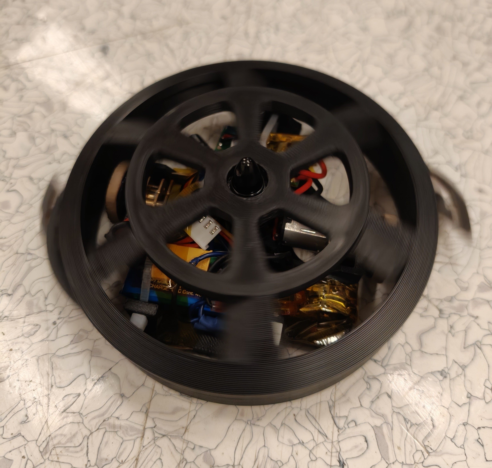
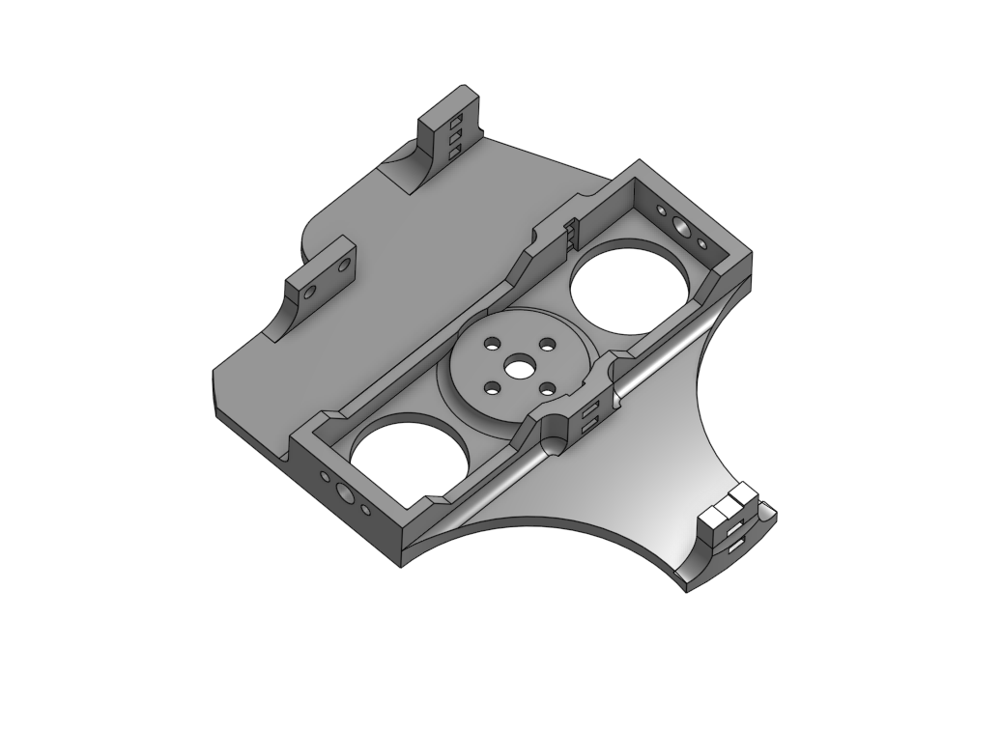
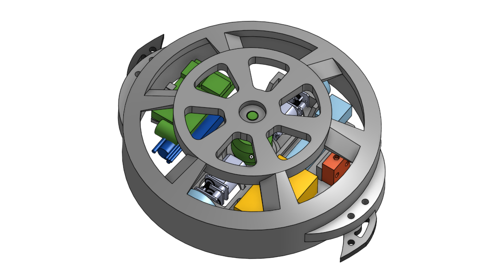
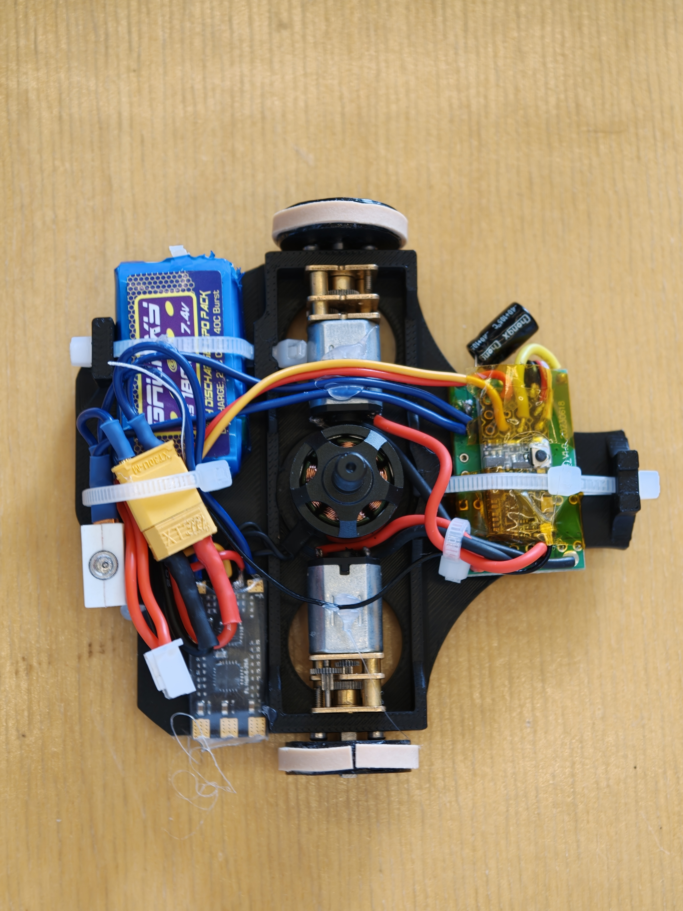
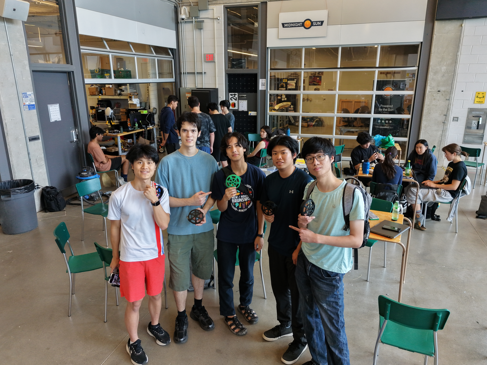

KillerByte
Full-Body Spinner BattleBot
Summer 2026 · WATBOTs 150 g BattleBot Competition

Overview
KillerByte is a 150 g full-body horizontal spinner designed and built for the Summer 2026 WATBOTs BattleBot competition. Inspired by the heavyweight robot Gigabyte, our team balanced weapon performance, weight efficiency, manufacturability, and repairability in a compact competition robot.
- Competition class: 150 g
- Architecture: full-body horizontal spinner
- Focus: performance, manufacturability, and field repairability
Design Highlights
Weight-Optimized Baseplate
The baseplate was redesigned to remove unnecessary mass while preserving secure mounting points for every critical component. The final part was 45% lighter than the initial design, creating more room in the mass budget without compromising the robot's structural layout.

Spinner Shell
The spinning shell was shaped to generate additional downforce at weapon speed, helping the robot stay planted while retaining the full-body-spinner form factor.

Build and Integration
Preparing the robot for competition required repeated troubleshooting and iteration across mechanical assembly, electronics, clearances, and fitment. Seeing the completed robot run on competition day validated the value of designing components for adjustment and repair.

Engineering Takeaways
- Use proven, quality-critical hardware. Low-quality motors can cost more time than they save in budget.
- Prototype and verify clearances, fitment, and assembly before committing to a final design.
- Insulate and secure wiring; a single short can end a match.
- Keep CAD clean and editable so late-stage changes remain manageable.
- Design for repair: assume damage will occur and make components accessible and replaceable.
- Prioritize drivability alongside weapon power; a powerful spinner must still be controllable.
Team
KillerByte was built with Aaron Lew, Aiden Tam, Noah Oliver-Pang, and Cheuk Him Wong. Thank you to the WATBOTs organizers and the team for an intense and rewarding build season.
